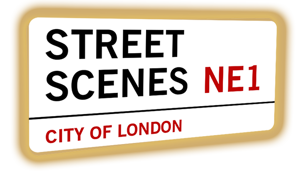

Street Scenes
Organising friendly, public gatherings for all
5 years of street events
Many new friends
Proof people like street events and want to make them happen
All sorts of activities to entertain
...
Now we build a network of event organisers
Therefore, a Meteor app to facilitate the network
mvp now in beta
1 User proposes events → emails sent to network
2 Others reply if they can help with event
3 If critical number can help, event is published
Community project, needs contributors
I develop app alongside other project needs, in my spare time
Will you help code this?!
Scope for everything from small commits to module building
Features needed
Event organiser basics
Geolocation
For relevant event notifications, etc.
Reputation system
So people can trust others in network will help
General UX improvements
Testing, security, etc.
and join us on the streets!
facebook.com/street.scenes.london
twitter.com/street_scenes
streetscenes.org.uk

Help and follow the project
info@streetscenes.org.uk
facebook.com/street.scenes.london
twitter.com/street_scenes
streetscenes.org.uk